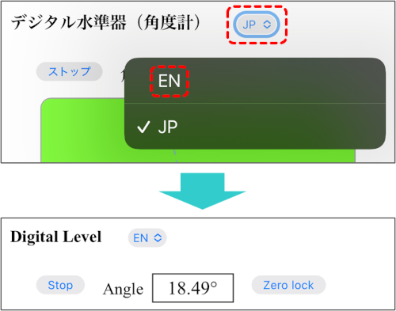

■ 操作方法
-
起動
左上の「スタート」ボタンをクリックすると水準器（角度計）が起動し，デバイスの置かれた面の傾き角度を計測する．黄緑色の領域がアルコール水準器を表しており，白い円が気泡を示す．
起動後にデバイスを傾けると気泡は傾斜の上の方に移動する．黄緑色の領域の中央に中心点があり，気泡が中心点の位置にあるとデバイスが水平になっていることを示す．
領域の中心点（緑点）と気泡の中心を通る点線は，鉛直線をデバイス画面へ射影した線となっている．気泡が中心点に接している状態では背景色がオレンジ色になる．
-
傾斜角度の測定

斜面上でデバイスを静止させると，その斜面の傾斜角度を測定することができる．
斜面上でデバイスが静止していても，斜面自体が加速度運動している状態で測定すると，正確な角度が測定できないので，斜面自体も静止している必要があることに注意．
-
ゼロ点調整
水準器が起動している状態で「ゼロ点調整」ボタンをクリックすると，そのときのデバイスの置かれた面の傾斜角度をゼロ（基準）として角度を測定するモードとなる．再度，このボタンをクリックすると解除される．このモードでは，背景色が黄緑から水色になる．

-
言語の選択
アプリ画面上部にある言語選択メニューで英語(EN)か日本語(JP)を選択して，アプリの表示言語を切り替えることができる（現時点では英語と日本語のみ）．